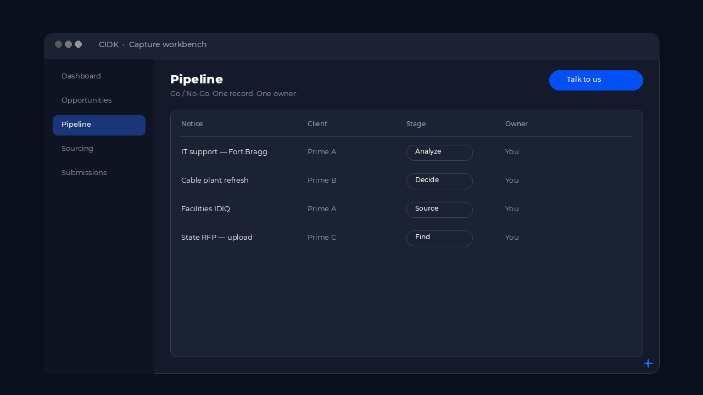
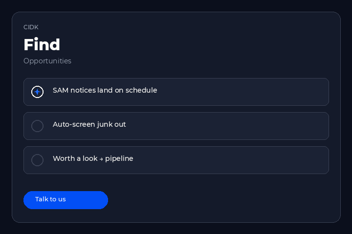
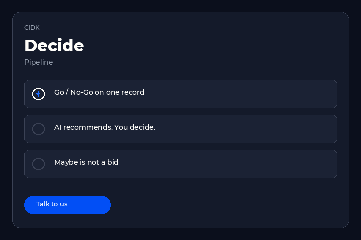
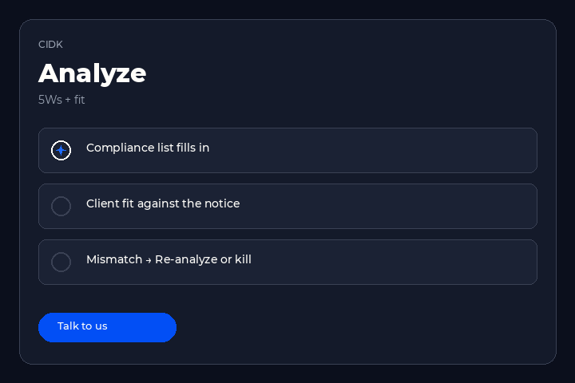
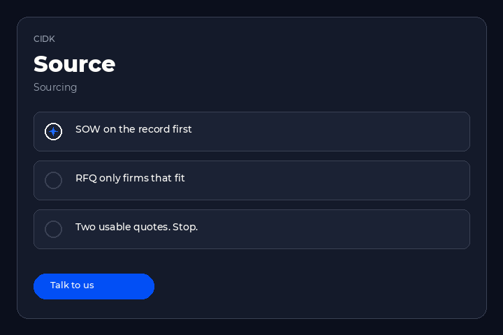
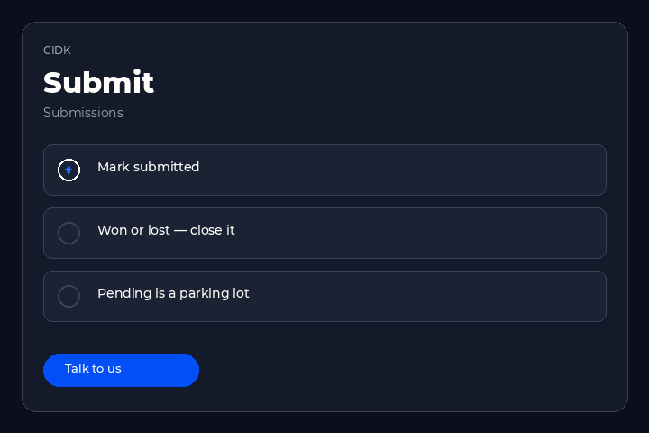
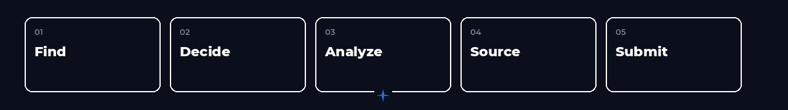

Platform
One platform for the GovCon lifecycle.
CIDK carries Find, Decide, Analyze, Source, and Submit on one record. From the opportunity you might chase to the response you send.

Modules
The CIDK loop.
Five parts of the same record. Module pages come next. These anchors are the map.

01
Find
A feed of opportunities with fit, value, and the agency on the requirement.

02
Decide
Bid or no-bid, with the reason and the person who signed it.

03
Analyze
Customer, competition, and the factors the evaluation will actually score.

04
Source
The team, the partners, and the past performance the pursuit can use.

05
Submit
Compliance, volumes, and the deadline. The record stays after it goes in.
Lifecycle
01 through 05.
Find, Decide, Analyze, Source, Submit. Same order on every pursuit.

- 01 Find
- 02 Decide
- 03 Analyze
- 04 Source
- 05 Submit
Services
The workbench is CIDK. The partner is Vorio.
Advise, or embed. Commercial and government. Qualify, position, pursue, win.